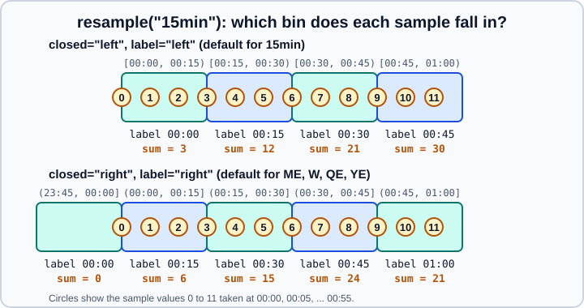

Resampling and Frequencies
|
This content was generated with the assistance of AI and should be verified against the official documentation before being relied on in production. |
Resampling changes the frequency of a time series: hourly readings become daily totals (downsampling) or daily
values become a 12-hour grid (upsampling). In pandas the work is done by resample, which groups the rows of a
DatetimeIndex, PeriodIndex or TimedeltaIndex into regular time bins, and by asfreq, which only changes the
index. Both depend on frequency aliases such as "15min" or "ME", and most of the aliases that older tutorials
use were renamed in pandas 2.2 and removed in pandas 3.0.
This page targets pandas 3.1 on Python 3.13 or 3.14 and was checked in October 2026; every example was run with
Python 3.13 and pandas 3.1.0, and the printed output is the real output. It assumes you are comfortable with
timestamps, date_range and time zones, which are covered in
Time Series and Dates. Moving windows over time are in
Rolling, Expanding and EWM, and grouping by columns is in
Group By. Durations are covered in Time Deltas.
All examples use the standard imports:
import numpy as np
import pandas as pdThe two operations: resample and asfreq
Series.resample(rule) and DataFrame.resample(rule) return a Resampler object, in the same way that groupby
returns a GroupBy object: nothing is computed until you call an aggregation, an upsampling method or apply. The
result of an aggregation has one row per bin and a regular index.
asfreq(freq) is much simpler. It builds the new regular index and picks the existing value at each new timestamp.
Timestamps that did not exist before get NaN (or the fill_value or method you give), and values that fall
between the new timestamps are discarded. It never aggregates.
resample(rule).agg() |
asfreq(freq) |
|
|---|---|---|
Downsampling |
Combines all rows of a bin with an aggregation (sum, mean, last, ohlc, a function) |
Keeps only the row exactly at each new timestamp; the others are lost |
Upsampling |
Creates empty bins, which you fill with |
Creates the new timestamps with |
Typical use |
Daily totals from hourly data, OHLC bars from ticks |
Putting an irregular series on a regular grid, or checking for gaps |
The signature in pandas 3.1 is the following; only rule is required.
import inspect
print(inspect.signature(pd.Series.resample))(self, rule, closed: "Literal['right', 'left'] | None" = None, label: "Literal['right', 'left'] | None" = None, convention: "Literal['start', 'end', 's', 'e']" = 'start', on: 'Level | None' = None, level: 'Level | None' = None, origin: 'str | TimestampConvertibleTypes' = 'start_day', offset: 'TimedeltaConvertibleTypes | None' = None, group_keys: 'bool' = False) -> 'Resampler'
Source: pandas.Series.resample.
Downsampling: from many rows to one per bin
The following series has one value every five minutes for an hour. resample("15min") puts three samples into each
bin and aggregates them.
ts = pd.Series(
np.arange(12),
index=pd.date_range("2026-03-01 00:00", periods=12, freq="5min"),
name="count",
)
print(ts.resample("15min").sum())
print(ts.resample("15min").agg(["min", "max", "mean"]))
print(ts.resample("15min").ohlc())
print(ts.resample("15min").size())2026-03-01 00:00:00 3
2026-03-01 00:15:00 12
2026-03-01 00:30:00 21
2026-03-01 00:45:00 30
Freq: 15min, Name: count, dtype: int64
min max mean
2026-03-01 00:00:00 0 2 1.0
2026-03-01 00:15:00 3 5 4.0
2026-03-01 00:30:00 6 8 7.0
2026-03-01 00:45:00 9 11 10.0
open high low close
2026-03-01 00:00:00 0 2 0 2
2026-03-01 00:15:00 3 5 3 5
2026-03-01 00:30:00 6 8 6 8
2026-03-01 00:45:00 9 11 9 11
2026-03-01 00:00:00 3
2026-03-01 00:15:00 3
2026-03-01 00:30:00 3
2026-03-01 00:45:00 3
Freq: 15min, Name: count, dtype: int64
The methods available on a Resampler in pandas 3.1 are sum, mean, median, min, max, first, last,
prod, std, var, sem, count, size, nunique, quantile, ohlc, agg (alias aggregate), apply,
transform, pipe, asfreq, ffill, bfill, nearest, interpolate, and the inspection helpers groups,
indices, get_group, keys and ngroups. ohlc (open, high, low, close) comes from finance and is the standard way to
build candlestick bars from tick data; on a DataFrame it produces a two-level column index.
Source: pandas user guide: Resampling.
Which bin does a row belong to: closed, label, origin and offset
Four arguments decide where the bins are and how they are named. They are the usual source of "off by one bin" surprises, so the rules are worth stating exactly.
-
closedsays which end of each interval is included:"left"makes the interval[start, end)and"right"makes it(start, end]. -
labelsays which end names the bin in the result: the left or the right edge. -
originsays where the grid is anchored. The default"start_day"is midnight of the first day of the data, so a"15min"grid always falls on :00, :15, :30 and :45. The other values are"start"(the first timestamp),"end"(the last timestamp),"end_day"(midnight after the last day),"epoch"(1970-01-01) or anyTimestamp. -
offsetshifts the whole grid by aTimedelta.
The defaults of closed and label depend on the rule. For the end-anchored rules "ME", "QE", "YE", "W", "BME",
"BQE" and "BYE" both default to "right", so a bin ends on and is named after the day that closes the period.
For every other rule, including "D", "h" and "15min", both default to "left".

In the upper row the sample taken at exactly 00:15 belongs to the bin that starts at 00:15. In the lower row the same sample belongs to the bin that ends at 00:15 and is named 00:15, and the sample at 00:00 falls alone into the bin that ends at 00:00. This is what the code gives:
default = ts.resample("15min").sum()
right = ts.resample("15min", closed="right", label="right").sum()
print(pd.DataFrame({"closed=left,label=left": default, "closed=right,label=right": right}))Source: pandas user guide: Resampling and Anchored offsets.
closed=left,label=left closed=right,label=right 2026-03-01 00:00:00 3.0 0 2026-03-01 00:15:00 12.0 6 2026-03-01 00:30:00 21.0 15 2026-03-01 00:45:00 30.0 24 2026-03-01 01:00:00 NaN 21
The values in the closed=right column match the figure: 0, 6, 15, 24 and 21. Choose closed="right" when a
timestamp stands for the end of a measurement interval, for example a meter reading taken at the end of each quarter
of an hour, and choose label="right" when the result should carry the time at which each interval was complete.
origin and offset move the grid itself:
print(ts.resample("15min", offset="7min").sum())
print(ts.resample("15min", origin="end").sum())Source: pandas user guide: Resampling and Anchored offsets.
2026-02-28 23:52:00 1 2026-03-01 00:07:00 9 2026-03-01 00:22:00 18 2026-03-01 00:37:00 27 2026-03-01 00:52:00 11 Freq: 15min, dtype: int64 2026-03-01 00:10:00 3 2026-03-01 00:25:00 12 2026-03-01 00:40:00 21 2026-03-01 00:55:00 30 Freq: 15min, dtype: int64
With origin="end" the grid is anchored on the last timestamp (00:55), so the bins are (-00:05, 00:10], (00:10, 00:25]
and so on and each one is named by its right edge. Use this when the most recent bin must be complete, as in a
dashboard that always shows the last full hour.
Rules that are a multiple of a day or longer than a day, such as "3D", are anchored on the first day of the data, not
on the calendar. If you need "weeks that start on Monday", use an anchored rule such as "W-MON" (see the section on
offsets below) and decide closed and label explicitly.
x = pd.Series(1, index=pd.date_range("2026-10-01", "2026-10-31"))
print(x.resample("W").sum()) # weeks ending Sunday
print(x.resample("W-MON", closed="left", label="left").sum()) # weeks starting Monday2026-10-04 4 2026-10-11 7 2026-10-18 7 2026-10-25 7 2026-11-01 6 Freq: W-SUN, dtype: int64 2026-09-28 4 2026-10-05 7 2026-10-12 7 2026-10-19 7 2026-10-26 6 Freq: W-MON, dtype: int64
Source: pandas user guide: Resampling and Anchored offsets.
DataFrames: columns, named aggregation and groups
A DataFrame is resampled with the same call. Use on= when the timestamps are in a column, or level= for one level of a
MultiIndex, instead of moving them into the index. Named aggregation, as in groupby, gives clean column names.
trades = pd.DataFrame(
{
"when": pd.date_range("2026-10-01 09:00", periods=8, freq="20min"),
"symbol": ["AAA", "BBB"] * 4,
"price": [10.0, 50.0, 10.5, 49.0, 10.2, 51.0, 10.8, 50.5],
"qty": [100, 20, 50, 30, 80, 10, 60, 40],
}
)
hourly = trades.resample("1h", on="when").agg(
avg_price=("price", "mean"), volume=("qty", "sum"), trades=("qty", "size")
)
print(hourly)
print(trades.set_index("when").resample("1h").agg({"price": ["first", "last"], "qty": "sum"}))Source: pandas API reference: Resampling and pandas.Grouper.
avg_price volume trades
when
2026-10-01 09:00:00 23.500000 170 3
2026-10-01 10:00:00 36.733333 120 3
2026-10-01 11:00:00 30.650000 100 2
price qty
first last sum
when
2026-10-01 09:00:00 10.0 10.5 170
2026-10-01 10:00:00 49.0 51.0 120
2026-10-01 11:00:00 10.8 50.5 100
To resample each group separately, either group first and then resample, or put a time grouper inside groupby. Both give
one value per group and bin; the second form is usually clearer when you need several keys.
print(trades.set_index("when").groupby("symbol")["qty"].resample("1h").sum())
print(trades.groupby(["symbol", pd.Grouper(key="when", freq="1h")])["qty"].sum().unstack(0))Source: pandas API reference: Resampling and pandas.Grouper.
symbol when
AAA 2026-10-01 09:00:00 150
2026-10-01 10:00:00 80
2026-10-01 11:00:00 60
BBB 2026-10-01 09:00:00 20
2026-10-01 10:00:00 40
2026-10-01 11:00:00 40
Name: qty, dtype: int64
symbol AAA BBB
when
2026-10-01 09:00:00 150 20
2026-10-01 10:00:00 80 40
2026-10-01 11:00:00 60 40
pd.Grouper(key=..., freq=...) accepts the same closed, label, origin and offset arguments as resample. The
old pd.TimeGrouper was removed long ago; use pd.Grouper.
A DataFrame that has a non-numeric column raises when you ask for a numeric aggregation, instead of silently dropping the
column. Select the columns you want or pass numeric_only=True:
try:
trades.set_index("when").resample("1h").mean()
except TypeError as exc:
print("TypeError:", exc)
print(trades.set_index("when").resample("1h").mean(numeric_only=True))TypeError: dtype 'str' does not support operation 'mean'
price qty
when
2026-10-01 09:00:00 23.500000 56.666667
2026-10-01 10:00:00 36.733333 40.000000
2026-10-01 11:00:00 30.650000 50.000000
The message mentions the str dtype because pandas 3.0 made str the default dtype for text columns; see
Text Data and the str Dtype.
Source: pandas API reference: Resampling and pandas.Grouper.
Empty bins: sum, count and mean
A bin that contains no rows is still created whenever it lies between the first and the last timestamp. What it contains depends on the aggregation, and the difference matters for reports.
hourly = pd.Series(
[1.0, 2.0, 3.0],
index=pd.date_range("2026-01-01", periods=3, freq="D"),
name="level",
)
gappy = hourly.drop(hourly.index[1])
print(gappy.resample("D").sum())
print(gappy.resample("D").sum(min_count=1))
print(gappy.resample("D").mean())Source: pandas.api.typing.Resampler.sum
2026-01-01 1.0 2026-01-02 0.0 2026-01-03 3.0 Freq: D, Name: level, dtype: float64 2026-01-01 1.0 2026-01-02 NaN 2026-01-03 3.0 Freq: D, Name: level, dtype: float64 2026-01-01 1.0 2026-01-02 NaN 2026-01-03 3.0 Freq: D, Name: level, dtype: float64
sum returns 0 and count returns 0 for an empty bin, prod returns 1, and mean, min, max, first and last
return NaN. Pass min_count=1 to sum or prod when "no data" must stay "no data". A day with no sales and a day on
which the sales system was down are different facts, and a zero hides the difference.
Upsampling: from few rows to more
When the new frequency is finer than the data, every new timestamp is an empty bin. resample does not guess values; you
choose the strategy with a method on the Resampler. The same data, upsampled to 12 hours, shows the four common
strategies:
half_day = hourly.resample("12h")
print(pd.DataFrame({
"asfreq": half_day.asfreq(),
"ffill": half_day.ffill(),
"interpolate": half_day.interpolate(),
"nearest": half_day.nearest(),
}))Source: pandas.DataFrame.asfreq and Resampler.interpolate.
asfreq ffill interpolate nearest 2026-01-01 00:00:00 1.0 1.0 1.0 1.0 2026-01-01 12:00:00 NaN 1.0 1.5 2.0 2026-01-02 00:00:00 2.0 2.0 2.0 2.0 2026-01-02 12:00:00 NaN 2.0 2.5 3.0 2026-01-03 00:00:00 3.0 3.0 3.0 3.0
-
asfreq()leaves the new timestamps empty (NaN). It is the right choice when you will fill them yourself. -
ffill()carries the last known value forward (a "step" signal such as a price list or a configuration).bfill()carries the next one backwards. Both acceptlimitto stop after a number of bins, so that a gap does not fill indefinitely. -
interpolate()fills linearly by default; it is appropriate for smooth physical quantities such as a temperature, and wrong for counters and for prices that did not change in between. It accepts the samemethodvalues asSeries.interpolate. Itsinplacekeyword is deprecated, andinplace=TrueraisesValueErrorbecause a resampled result is never modified in place. -
nearest()copies the value of the closest original timestamp.
Series.asfreq and DataFrame.asfreq do the same without creating a Resampler, and add fill_value and method:
print(hourly.asfreq("12h", method="ffill"))
print(hourly.asfreq("12h", fill_value=0.0))2026-01-01 00:00:00 1.0 2026-01-01 12:00:00 1.0 2026-01-02 00:00:00 2.0 2026-01-02 12:00:00 2.0 2026-01-03 00:00:00 3.0 Freq: 12h, Name: level, dtype: float64 2026-01-01 00:00:00 1.0 2026-01-01 12:00:00 0.0 2026-01-02 00:00:00 2.0 2026-01-02 12:00:00 0.0 2026-01-03 00:00:00 3.0 Freq: 12h, Name: level, dtype: float64
A common mistake is to upsample an additive quantity, such as "sales per day", to hours and fill forward: the total then
becomes 24 times larger. Upsample rates and levels with ffill or interpolate; divide amounts that must keep their total
(hourly.resample("h").ffill() / 24) or distribute them explicitly.
Source: pandas.DataFrame.asfreq and Resampler.interpolate.
Frequency aliases and offsets
A frequency is an offset object such as Hour, MonthEnd or BusinessDay, written in code as a string alias and an
optional multiplier: "15min", "2h", "ME", "W-MON". pd.tseries.frequencies.to_offset shows the object behind
an alias, and pd.date_range(start, periods=n, freq=alias) shows the timestamps it generates.
The renamed aliases
pandas 2.2 renamed the ambiguous aliases and deprecated the old spellings; pandas 3.0 removed them. Code and tutorials that
use the old names raise ValueError in pandas 3.1.
| Old alias (removed) | Use now | Meaning |
|---|---|---|
|
|
Month end, business month end, semi-month end (15th and last day), custom business month end |
|
|
Quarter end, business quarter end |
|
|
Year end, business year end ( |
|
|
Hour |
|
|
Minute |
|
|
Second |
|
|
Millisecond, microsecond, nanosecond |
Begin-of-period aliases ("MS", "QS", "YS", "BMS", "BQS", "BYS", "SMS") were never renamed. pandas 3.0 added the
half-year offsets HalfYearBegin, HalfYearEnd, BHalfYearBegin and BHalfYearEnd (aliases "HYS", "HYE",
"BHYS", "BHYE").
The following script checks what pandas 3.1 accepts. The lowercase spellings "d" and "w" and the upper-case
"US" and "NS" still work but emit a Pandas4Warning, so write "D", "W", "us" and "ns".
import re
import warnings
import pandas as pd
old_aliases = ["M", "Q", "Y", "A", "BM", "H", "T", "S", "L", "U", "N", "2H"]
for alias in old_aliases:
try:
pd.tseries.frequencies.to_offset(alias)
print(f"{alias!r:6} accepted")
except ValueError as exc:
hint = re.search(r"(Please use '\w+' instead|Did you mean \w+\?)", str(exc))
print(f"{alias!r:6} rejected: {hint.group(1) if hint else exc}")
new_aliases = ["ME", "QE", "YE", "BME", "h", "min", "s", "ms", "us", "ns", "D", "B", "W", "MS", "QS", "YS", "SME", "HYE"]
for alias in new_aliases:
print(f"{alias!r:6} -> {pd.tseries.frequencies.to_offset(alias)!r}")
# Deprecated lowercase and abbreviated spellings still work but warn
with warnings.catch_warnings(record=True) as caught:
warnings.simplefilter("always")
pd.tseries.frequencies.to_offset("d")
pd.tseries.frequencies.to_offset("US")
for w in caught:
print(type(w.message).__name__, "-", w.message)'M' rejected: Please use 'ME' instead 'Q' rejected: Please use 'QE' instead 'Y' rejected: Please use 'YE' instead 'A' rejected: Did you mean Y? 'BM' rejected: Please use 'BME' instead 'H' rejected: Did you mean h? 'T' rejected: Did you mean min? 'S' rejected: Did you mean s? 'L' rejected: Did you mean ms? 'U' rejected: Did you mean us? 'N' rejected: Did you mean ns? '2H' rejected: Did you mean h? 'ME' -> <MonthEnd> 'QE' -> <QuarterEnd: startingMonth=12> 'YE' -> <YearEnd: month=12> 'BME' -> <BusinessMonthEnd> 'h' -> <Hour> 'min' -> <Minute> 's' -> <Second> 'ms' -> <Milli> 'us' -> <Micro> 'ns' -> <Nano> 'D' -> <Day> 'B' -> <BusinessDay> 'W' -> <Week: weekday=6> 'MS' -> <MonthBegin> 'QS' -> <QuarterBegin: startingMonth=1> 'YS' -> <YearBegin: month=1> 'SME' -> <SemiMonthEnd: day_of_month=15> 'HYE' -> <HalfYearEnd: startingMonth=12> Pandas4Warning - 'd' is deprecated and will be removed in a future version, please use 'D' instead. Pandas4Warning - 'US' is deprecated and will be removed in a future version, please use 'us' instead.
The hint for "A" suggests "Y", which is itself rejected; the replacement for "A" is "YE". The same rename does not
apply to Periods: a PeriodIndex keeps "M", "Q" and "Y" (see below).
Multipliers and combined rules
A number in front of an alias multiplies it, and several units can be combined. These are equivalent ways to say "every
90 minutes", and all of them produce a fixed-length Minute offset:
print(pd.date_range("2026-01-01", periods=3, freq="90min"))
print(pd.date_range("2026-01-01", periods=3, freq="1h30min"))Source: pandas.date_range
DatetimeIndex(['2026-01-01 00:00:00', '2026-01-01 01:30:00',
'2026-01-01 03:00:00'],
dtype='datetime64[us]', freq='90min')
DatetimeIndex(['2026-01-01 00:00:00', '2026-01-01 01:30:00',
'2026-01-01 03:00:00'],
dtype='datetime64[us]', freq='90min')
Anchored, business and custom offsets
Calendar offsets have anchors: a weekday, a month or a day of month. They are written with a suffix, as in "W-WED"
(weeks ending Wednesday), "QE-NOV" (quarters ending in February, May, August and November) or "WOM-2FRI" (the second
Friday of each month).
from pandas.tseries.holiday import USFederalHolidayCalendar
from pandas.tseries.offsets import CustomBusinessDay
start = "2026-10-26"
print(pd.date_range(start, periods=5, freq="B")) # Mon-Fri
print(pd.date_range(start, periods=3, freq="W-WED")) # weekly, anchored on Wednesday
print(pd.date_range(start, periods=3, freq="WOM-2FRI")) # second Friday of each month
print(pd.date_range(start, periods=3, freq="ME")) # month ends
print(pd.date_range(start, periods=3, freq="MS")) # month starts
print(pd.date_range(start, periods=4, freq="SME")) # 15th and month end
print(pd.date_range(start, periods=3, freq="QE-NOV")) # quarters ending in Feb, May, Aug, Nov
print(pd.date_range(start, periods=3, freq="HYE")) # half-year ends (new in 3.0)
print(pd.date_range("2026-10-30 14:00", periods=5, freq="bh")) # business hours 09:00-17:00
print(pd.date_range("2026-11-23", periods=5, freq=CustomBusinessDay(calendar=USFederalHolidayCalendar())))Source: pandas.date_range
DatetimeIndex(['2026-10-26', '2026-10-27', '2026-10-28', '2026-10-29',
'2026-10-30'],
dtype='datetime64[us]', freq='B')
DatetimeIndex(['2026-10-28', '2026-11-04', '2026-11-11'],
dtype='datetime64[us]', freq='W-WED')
DatetimeIndex(['2026-11-13', '2026-12-11', '2027-01-08'],
dtype='datetime64[us]', freq='WOM-2FRI')
DatetimeIndex(['2026-10-31', '2026-11-30', '2026-12-31'],
dtype='datetime64[us]', freq='ME')
DatetimeIndex(['2026-11-01', '2026-12-01', '2027-01-01'],
dtype='datetime64[us]', freq='MS')
DatetimeIndex(['2026-10-31', '2026-11-15', '2026-11-30', '2026-12-15'],
dtype='datetime64[us]', freq='SME-15')
DatetimeIndex(['2026-11-30', '2027-02-28', '2027-05-31'],
dtype='datetime64[us]', freq='QE-NOV')
DatetimeIndex(['2026-12-31', '2027-06-30', '2027-12-31'],
dtype='datetime64[us]', freq='HYE-DEC')
DatetimeIndex(['2026-10-30 14:00:00', '2026-10-30 15:00:00',
'2026-10-30 16:00:00', '2026-11-02 09:00:00',
'2026-11-02 10:00:00'],
dtype='datetime64[us]', freq='bh')
DatetimeIndex(['2026-11-23', '2026-11-24', '2026-11-25', '2026-11-27',
'2026-11-30'],
dtype='datetime64[us]', freq='C')
Notice that 26 November 2026 (Thanksgiving) is missing from the last result: CustomBusinessDay skips weekends and the
holidays of the calendar. "bh" counts only the hours between 09:00 and 17:00 on business days, and "B" skips
Saturdays and Sundays but knows nothing about holidays. Business-day offsets can also be applied to a single timestamp:
from pandas.tseries.offsets import BDay
friday = pd.Timestamp("2026-10-30")
saturday = pd.Timestamp("2026-10-31")
print(friday + BDay(1), saturday + BDay(1), BDay().rollforward(saturday), BDay().rollback(saturday))2026-11-02 00:00:00 2026-11-02 00:00:00 2026-11-02 00:00:00 2026-10-30 00:00:00
An anchored offset moves a timestamp to the next anchor. If the timestamp is already on the anchor, adding the offset
moves to the following one, and adding 0 * offset or calling rollforward leaves it where it is:
from pandas.tseries.offsets import MonthEnd
print(pd.Timestamp("2026-01-15") + MonthEnd(), pd.Timestamp("2026-01-31") + MonthEnd(), pd.Timestamp("2026-01-31") + MonthEnd(0))
print(pd.Timestamp("2026-01-31") + pd.DateOffset(months=1))Source: pandas.Timestamp
2026-01-31 00:00:00 2026-02-28 00:00:00 2026-01-31 00:00:00 2026-02-28 00:00:00
A DateOffset such as pd.DateOffset(months=1) is a calendar offset too, and clips to the last valid day of the month.
It is not the same thing as a Timedelta, which is a fixed number of elapsed seconds; durations are the subject of
Time Deltas.
Day is a calendar day since pandas 3.0
In pandas 3.0 pd.offsets.Day always represents a calendar day: adding Day(1) preserves the wall-clock time across a
daylight-saving change, while Hour(24) and Timedelta(hours=24) add exactly 24 elapsed hours. As a consequence
Day(n) is no longer equal to Hour(24 * n), and Day no longer supports division. The consequence for resampling is
that a daily bin is a calendar day, which in a time zone can be 23 or 25 hours long:
hours = pd.date_range("2026-03-07", periods=72, freq="h", tz="America/New_York")
s = pd.Series(1, index=hours)
daily = s.resample("D").sum()
print(daily)2026-03-07 00:00:00-05:00 24 2026-03-08 00:00:00-05:00 23 2026-03-09 00:00:00-04:00 24 2026-03-10 00:00:00-04:00 1 Freq: D, dtype: int64
The second bin has 23 rows because the clocks in New York jumped forward at 02:00 on 8 March 2026. If the data is in UTC,
the daily bins have 24 hours; convert to the local zone before resampling when the business day is a local day. See the
time series page for the time-zone rules, tz_localize and tz_convert.
Source: What’s new in pandas 3.0.0 (the Day offset change) and
pandas user guide: Time series and date functionality.
Resampling Periods
A PeriodIndex represents spans (a month, a quarter) instead of instants. Resampling it uses Period aliases, which kept
the old "M", "Q" and "Y" spellings, and the convention argument says whether an upsampled period is placed at its
start or its end. Using the new "ME" alias with a PeriodIndex is an error.
monthly = pd.Series(
[10.0, 12.0, 11.0, 15.0, 14.0, 16.0],
index=pd.period_range("2026-01", periods=6, freq="M"),
name="visits",
)
quarterly = monthly.resample("Q").sum()
print(quarterly)
print(quarterly.resample("M", convention="start").ffill())
try:
monthly.resample("ME")
except ValueError as exc:
print("ValueError:", str(exc).splitlines()[0])2026Q1 33.0
2026Q2 45.0
Freq: Q-DEC, Name: visits, dtype: float64
2026-01 33.0
2026-02 33.0
2026-03 33.0
2026-04 45.0
2026-05 45.0
2026-06 45.0
Freq: M, Name: visits, dtype: float64
ValueError: Invalid frequency: ME. Failed to parse with error message: ValueError("for Period, please use 'M' instead of 'ME'")
The old kind="period" argument that converted the result of a datetime resample to periods no longer exists; call
to_period() on the result instead.
Arguments and spellings that no longer work
Tutorials and books from the pandas 0.20 era (2017) use several arguments that were removed. Every one of
the following raises TypeError in pandas 3.1.
s = pd.Series(range(6), index=pd.date_range("2026-01-01", periods=6, freq="D"))
for kwargs in ({"kind": "period"}, {"loffset": "1h"}, {"base": 1}, {"axis": 0}):
try:
s.resample("2D", **kwargs)
except TypeError as exc:
print(f"{list(kwargs)[0]:8} -> TypeError: {exc}")Source: What’s new in pandas 3.1.0 and What’s new in pandas 3.0.0.
kind -> TypeError: NDFrame.resample() got an unexpected keyword argument 'kind' loffset -> TypeError: NDFrame.resample() got an unexpected keyword argument 'loffset'. Did you mean 'offset'? base -> TypeError: NDFrame.resample() got an unexpected keyword argument 'base' axis -> TypeError: NDFrame.resample() got an unexpected keyword argument 'axis'
| Older code (2017-era books and tutorials) | Status in pandas 3.1 | Use instead |
|---|---|---|
|
|
|
|
|
Shift the labels of the result: |
|
|
|
|
|
|
|
|
Transpose first: |
|
Not available |
|
|
Removed |
|
|
|
|
|
Still a string, but warns |
|
pandas 3.1 changed one more resample-related behaviour: infer_freq on quarter-start data reports the equivalent anchor of
the first calendar quarter, such as "QS-JAN" instead of "QS-OCT". Related deprecations in 3.1 are tuple keys in
Resampler.__getitem__ (use a list of columns) and unpacking of a length-one result in Resampler.agg.
idx = pd.date_range("2026-01-01", periods=5, freq="2D")
print(pd.infer_freq(idx)) # still a string; warns with Pandas4Warning
pd.set_option("future.infer_freq_returns_offset", True)
print(repr(pd.infer_freq(idx))) # an offset object, the future behaviour
pd.reset_option("future.infer_freq_returns_offset")2D <2 * Days>
Source: What’s new in pandas 3.1.0 and What’s new in pandas 3.0.0.
Resample or rolling?
resample partitions time into non-overlapping bins and returns one row per bin. rolling with a time window such as
rolling("7D") produces a value for every original row, using the observations in the preceding window. Use resample
to change the reporting frequency ("weekly totals") and rolling to smooth without changing it ("trailing seven-day
average"). They are often combined: resample to a regular grid first, then roll. See
Rolling, Expanding and EWM.
Pitfalls checklist
-
An index that is not a
DatetimeIndex,PeriodIndexorTimedeltaIndexcannot be resampled: convert withpd.to_datetimeandset_index, or useon=. -
An unsorted index is accepted by
resample, which sorts internally, butasfreqanddate_rangecomparisons are easier to reason about on a sorted index; callsort_index()first. -
Duplicated timestamps are fine for
resample(they fall in the same bin) but makeasfreqraise, because the new index cannot be reindexed uniquely. -
The result of
resample().sum()on a gap contains zeros, notNaN; usemin_count=1when the difference matters. -
closedandlabeldefault to"right"only for the end-anchored rules (ME,QE,YE,W,BME,BQE,BYE). Check the first and last bins of every result you publish. -
A time zone with daylight saving makes daily bins 23 or 25 hours long; the behaviour is correct and intended.
-
Use
h,min,sin lowercase,DandWin uppercase, andME,QE,YEfor ends of periods; anything else is rejected or deprecated. -
Do not combine
resample("ME")with aPeriodIndex; use"M"there.
References
-
R dates and times for the equivalent concepts in R